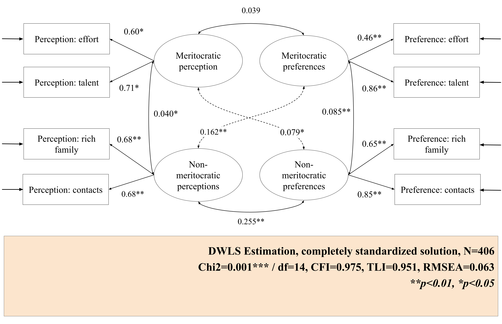
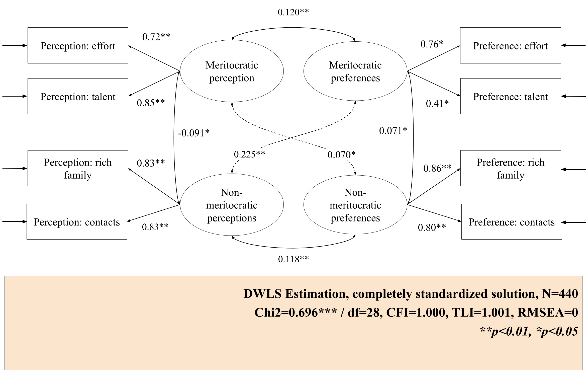

![]()
| Components | Dimensions | Item (English) | Item original (Spanish) |
|---|---|---|---|
| Perception | Meritocratic | In Chile people are rewarded for their efforts | En Chile las personas son recompensadas por sus esfuerzos |
| In Chile people are rewarded for their intelligence and ability | En Chile las personas son recompensadas por su inteligencia y habilidad | ||
| Non meritocratic | In Chile those with wealthy parents do much better in life | En Chile a quienes tienen padres ricos les va mucho mejor en la vida | |
| In Chile those with good contacts do much better in life | En Chile a quienes tienen buenos contactos les va mejor en la vida | ||
| Preference | Meritocratic | Those who work harder should reap greater rewards than those who work less hard | Quienes más se esfuerzan deberían obtener mayores recompensas que quienes se esfuerzan menos |
| Those with more talent should reap greater rewards than those with less talent | Quienes poseen más talento deberían obtener mayores recompensas que quienes poseen menos talento | ||
| Non meritocratic | It is good that those who have rich parents do better in life | Está bien que quienes tengan padres ricos les vaya mejor en la vida | |
| It is good that those who have good contacts do better in life | Está bien que quienes tengan buenos contactos les vaya mejor en la vida |
This document was last modified at 2025-09-15 12:57:41 and it was last rendered at 2025-09-15 12:57:41.
1 Introduction
Despite rising economic inequality and limited social mobility in contemporary societies (Chancel et al., 2022; López-Roldán & Fachelli, 2021), meritocratic beliefs remain remarkably high among citizens (Mijs, 2019; Sandel, 2020). The belief that economic disparities are justified by differences in meritocratic elements— such as individual effort and talent (Young, 1958)—has been identified as a key mechanism to explain the persistence of inequalities. Educational institutions have played a central role in promoting these beliefs due to their historical association with the promise of mobility and opportunity (Batruch et al., 2022; Dubet, 2011). Yet, research increasingly shows that schools often reproduce rather than reduce social inequalities (Bourdieu & Passeron, 1990; Goudeau & Croizet, 2017). This contradiction has drawn attention to the role of schools in fostering meritocratic beliefs that operate as system-justifying ideologies, obscuring structural disadvantages (Jost & Hunyady, 2003; Lampert, 2013; Wiederkehr et al., 2015). Therefore, understanding how young people perceive and endorse these beliefs is crucial, as they shape educational experiences and reinforce broader narratives about fairness and inequality.
While meritocracy is often defined as a system in which rewards are distributed based on individual merit—namely, effort and ability (Young, 1958)—its conceptualization in empirical research remains fragmented. Across disciplines, meritocratic beliefs have been measured through diverse constructs, ranging from general attitudes about social mobility and distributive justice to implicit ideas about success and individual responsibility (Castillo et al., 2019; Trump, 2020). Most instruments rely on single-dimension items or fail to distinguish between descriptive and normative components of meritocratic reasoning. Moreover, few tools capture non-meritocratic logics—such as the perceived role of social origin, family wealth, or connections—in shaping outcomes (e.g. Kunovich & Slomczynski, 2007; Reynolds & Xian, 2014). This heterogeneity in conceptual and operational definitions hinders comparative research and limits the capacity to assess how individuals, especially in younger ages, interpret and internalize meritocracy. Addressing this measurement gap is particularly relevant in educational settings, where such beliefs are first socialized and may have long-term implications for attitudes toward inequality and justice (Batruch et al., 2022; Elenbaas, 2019).
Facing the challenges in conceptualization and measurement of meritocratic beliefs, Castillo et al. (2023) proposed a conceptual and measurement model from a multidimensional perspective. This work distinguishes between two dimensions of meritocratic beliefs: perceptions (how individuals think meritocracy operates in practice) and preferences (how they think it should operate). Although this approach has found support in adult population, so far it has not been applied to younger populations, particularly in educational contexts. Against this background, and with the aim of contributing to empirical research on the early formation of meritocratic beliefs (Batruch et al., 2022; Elenbaas, 2019), this study seeks to extend the work of Castillo et al. (2023) by evaluating the applicability of their conceptual and measurement framework among school-aged populations in Chile. Specifically, it assesses whether perceptions and preferences regarding meritocratic and non-meritocratic principles are stable across age cohorts, and consistent over time. By focusing on early adolescence—a formative stage for civic and moral socialization—this study explores how distributive beliefs emerge, develop, and potentially consolidate within school settings.
This study focuses on Chile, a particularly relevant context for examining meritocracy in education. Despite sustained economic growth and poverty reduction, Chile remains one of the most unequal countries in Latin America and the OECD (Chancel et al., 2022; Flores et al., 2020), partly rooted in neoliberal reforms that turned education into a competitive market (Boccardo, 2020; Madariaga, 2020). Implemented during the dictatorship and expanded in democracy, these reforms institutionalized school choice and public-private competition, generating a highly stratified and segregated educational system (Corvalán et al., 2017). While public discontent has driven important reforms, meritocratic narratives remain deeply embedded in students’ understandings of success and fairness (Canales Cerón et al., 2021).
1.1 Meritocratic perceptions and preferences
Meritocracy is often understood as a normative principle that justifies the allocation of rewards and opportunities based on effort and talent. Originally proposed by Young (1958) in his dystopian novel, the concept was intended to critique a social order in which power is justified by achievement and social mobility mainly drive by merit. Despite this critical origin, meritocracy has been widely accepted as a principle of equity: the idea that people should be rewarded based on their effort and talent, rather than inherited privileges (Van De Werfhorst, 2024). However, as Sandel (2020) argues, the promise of meritocracy often becomes a source of inequality, as those who succeed are encouraged to believe they deserve it, while those who fail are forced to internalize the blame. Rather than mitigating inequality, meritocratic ideals can reinforce it by disguising structural disadvantage as a personal deficiency (Mijs, 2016).
Recent research has emphasized the need to decompose the term of “meritocratic beliefs”, distinguish between meritocratic preferences and meritocratic perceptions (Castillo et al., 2023). While preferences refer to normative ideas about how social rewards should be allocated based on merit (which should be the case), perceptions refer to subjective evaluations of how meritocracy operates in society (which is the case). This distinction allows for a more precise understanding of how people interpret inequality: they may regard merit as an ideal, while recognizing that society’s institutions often fail to deliver on this promise. In stratified societies, this gap between preferences and perceptions becomes particularly evident. People may continue to normatively believe in meritocracy even in the face of evidence that opportunities are unequally distributed (Mijs, 2019). Moreover, experimental evidence shows that making the unobserved potential of less fortunate individuals visible can reduce winners’ self-perceived deservingness and increase their willingness to redistribute, underscoring the interplay between perceptions of justice and redistribution (wiese_unveiling_2025?).
Several empirical studies have examined the social foundations and consequences of meritocratic beliefs, particularly among adult populations. Consistent findings indicate that individuals with higher levels of education, income, and occupational prestige are more likely to endorse meritocratic explanations for social outcomes (García-Sánchez et al., 2018; Mijs, 2019). These beliefs are not merely cognitive assessments or moral evaluations; they carry substantial implications for how people perceive fairness and redistribution. Individuals who view society as rewarding merit tend to justify existing inequalities and are less inclined to support redistributive policies (Hauser & Norton, 2017; Reynolds & Xian, 2014). Recent research further shows that exposure to meritocratic narratives reinforces the belief that poverty stems from individual failings rather than structural conditions, thereby decreasing support for redistribution and increasing the stigmatization of the poor (Hoyt et al., 2023). This dynamic contributes to the persistence of negative stereotypes and diminishes empathy toward those from disadvantaged socioeconomic backgrounds. Moreover, Busemeyer et al. (Busemeyer et al., 2021) argue that meritocratic narratives function as feedback mechanisms that shape public opinion and subjective well-being by framing welfare outcomes as deserved or undeserved within existing institutional frameworks. In doing so, meritocratic beliefs shift responsibility for success or failure onto individuals, obscure the role of structural factors, and ultimately reinforce the legitimacy of the status quo.
2 Method
2.1 Participants and Procedure
This study draws on secondary data from the Panel Survey on Education and Meritocracy (EDUMER) for its 2023 and 2024 waves for school-age students. The primary objective is to examine students’ beliefs, attitudes, and behaviors concerning meritocracy, inequality, and citizenship. Data collection was carried out by a professional research firm using a Computer-Assisted Web Interviewing (CAWI) approach, based on online questionnaires administered to sixth-grade and first-year secondary students from nine schools located in the Metropolitan and Valparaíso regions of Chile. The sampling strategy was non-probabilistic and lacked quota controls; however, a minimum sample size of 900 students was established to ensure adequate statistical power. All participants were provided with an informed consent form that was reviewed and validated by a parent or legal guardian. The final analytical sample comprises 846 students for the first wave (386 girls, 421 boys, 39 identifying as other; M_{age} = 13.4, SD_{age} = 1.6), and the second wave followed 662 of them (303 girls, 338 boys, 21 identifying as other; M_{age} = 14.4, SD_{age} = 1.6).
2.2 Measures
Scale of Perceptions and Preferences on Meritocracy: The variables included in the measurement model for meritocratic and non-meritocratic perceptions and preferences are operationalized according to the items proposed in the original scale. Perception of meritocracy is measured by two items that assess the level of agreement with the idea that effort and ability are rewarded in Chile, while non-meritocratic perception is measured by two items evaluating the agreement that success is linked to connections and family wealth. Preference for meritocracy is measured by two items that evaluate agreement with the idea that those who work harder or are more talented should be more rewarded. Preference for non-meritocratic aspects is measured by two indicators assessing agreement that it is acceptable for individuals with better connections or wealthy parents to achieve greater success (see Table 1). Each item is rated on a four-point Likert scale ranging from “strongly disagree” (1) to “strongly agree” (4).
Cohort level: To differentiate students’ academic levels across waves for conditional and multigroup invariance analyses, we created a variable indicating whether each student belonged to the primary or secondary school cohort at the time of the survey. This classification allows us to account for developmental differences between and within students. The composition of the cohorts is detailed in Table 2.
| Cohort level | N | Mean | SD | Man | Women | Others |
|---|---|---|---|---|---|---|
| Primary | 725 | 12.28 | 0.74 | 356 | 336 | 33 |
| Secondary | 783 | 15.22 | 0.92 | 403 | 353 | 27 |
2.3 Analytical strategy
To evaluate the underlying structure of the scale, we employed Confirmatory Factor Analysis (CFA) based on a measurement model with four latent factors, using Diagonally Weighted Least Squares with robust correction (WLSMV) estimation. This estimator is particularly suitable for ordinal data, such as four-point Likert-type scales, as it avoids the bias associated with treating categorical data as continuous (Kline, 2023).
Model fit was assessed following the guidelines of Brown (2015), using several indices: the Comparative Fit Index (CFI) and the Tucker-Lewis Index (TLI), with acceptable values above 0.95; the Root Mean Square Error of Approximation (RMSEA), with values below 0.06 indicating good fit; and the Chi-square statistic (acceptable fit indicated by p > 0.05 and a Chi-square/df ratio < 3).
A key contribution of this study lies in assessing the metric stability of the measurement model through factorial invariance testing (Davidov et al., 2014). We implemented two complementary strategies: invariance across cohorts (primary vs. secondary school students) and longitudinal invariance using two panel waves. Given the ordinal nature of the items, we estimated measurement invariance using methods appropriate for ordered categorical measures, following Liu et al. (2017) analysis. Setting a hierarchical approach, we tested four nested models: configural (equal factorial structure), metric (equal factor loadings), scalar (equal intercepts and thresholds), and strict invariance (equal residual variances).
In addition to the traditional Chi-square difference test for model comparisons, we used changes in fit indices to assess invariance: a change in CFI (\Delta \geq -0.010) and RMSEA (\Delta \geq 0.0) were adopted as more robust and sample-size-independent criteria, following Chen’s recommendations (2007).
All analyses were performed using the lavaan package in R version 4.2.2. The hypotheses of this research were pre-registered on the Open Science Framework (OSF), hosted by the Center of Open Science.
3 Results
3.1 Descriptive statistics
The distributions of responses for the meritocracy scale are shown in Figure 1, distinguishing between perceptions (Panel A) and preferences (Panel B). In Wave 1, Panel A (perceptions of how meritocracy actually operates in society) reveals a strong concentration of agreement in all items, particularly regarding the influence of contacts (77.2%), talent (73.4%), and having rich parents (71.4%), while effort also receives considerable endorsement (67.1%). Nonetheless, a significant proportion of students expressed disagreement: 33.1% did not perceive effort is rewarded, 28.6% rejected the idea that having rich parents leads to success, and 26.6% disagreed that talent plays a decisive role. These results suggest a dual recognition: students acknowledge the strong presence of non-meritocratic factors (contacts and parental wealth) in shaping success, while within the meritocratic dimensions, talent is perceived as more influential than effort. Notably, effort is the dimension with the lowest perceived reward in society.

In contrast, Panel B (preferences for how meritocracy should operate) displays a reversed pattern. A very large majority (87.9%) endorse effort as the most legitimate basis for reward, far exceeding its perceived importance in practice. Preferences regarding talent are more divided: 54% support rewarding it, while 45% disagree. Attitudes toward non-meritocratic factors are more negative, particularly regarding parental wealth, where responses are split nearly evenly between agreement and disagreement. For contacts, however, a relative majority (60.9%) still expressed that they should be rewarded, compared to 39.1% who disagreed. Overall, these findings highlight a strong normative preference for effort as the central criterion of meritocracy, while talent and parental wealth receive more ambivalent or critical evaluations. The relatively higher acceptance of contacts as a legitimate factor is noteworthy, suggesting that this element may not be viewed as inherently illegitimate in the ideal functioning of society.

The second wave (Figure 2) largely replicates these trends, with some shifts. In perceptions (Panel A), the recognition of effort as a determinant of success decreases slightly (61.5%), while the importance attributed to talent (69.9%), parental wealth (69.8%), and contacts (76.6%) remains consistently high. In preferences (Panel B), endorsement of effort as the central criterion of success remains extremely strong (88.2%), showing stability across waves. By contrast, support for talent declines, with disagreement rising to 50.5%. Attitudes toward parental wealth mirror those in Wave 1, remaining evenly divided, while the acceptance of contacts continues to be higher than rejection (59.1% vs. 39.1%), although still below the overwhelming support for effort.
Taken together, both waves reveal a stable duality. Students acknowledge that actual social outcomes are strongly shaped by non-meritocratic factors such as family wealth and contacts, and, to a lesser degree, by talent. At the same time, they overwhelmingly prefer a meritocratic ideal where effort—more than talent or inherited advantage—should determine success. This persistent gap between perceptions of reality and normative preferences underscores a central paradox: students strongly value meritocracy as a principle, while remaining skeptical about its realization in practice.
3.2 Cohort Invariance Test

The diagram shows the standardized factor loadings estimated with WLSMV for the primary and secondary cohorts. One of the first findings is that within each cohort, the loadings vary depending on the factor. In the case of the primary education model, the loadings of both meritocratic perception indicators differ as perception of effort at .60 and perception of talent at .71, so the meritocratic perception factor explains talent more than effort. In contrast, in the meritocratic preferences factor, the loadings vary greatly, with preference for effort being .46 and preference for talent being .86. This suggests that the factor explains the second item more than the first. Finally, the indicators of the non-meritocratic preferences factor vary, but not as strongly.

In the secondary education model, some similarities can be seen in comparison to the primary model. The indicators of the meritocratic perception factor have slightly higher loadings than in the previous model, but they do not differ as much from each other. The difference in the indicators of meritocratic preference is reversed, with preference for effort becoming the highest (.76) and preference for talent the lowest (0.41). With regard to non-meritocratic preferences, the indicators have much more similar factor loadings than in the primary school model.
| chisq | df | pvalue | cfi | tli | rmsea | srmr | |
|---|---|---|---|---|---|---|---|
| General | 41.026 | 14 | 0.000 | 0.989 | 0.978 | 0.048 | 0.039 |
| Primary | 36.295 | 14 | 0.001 | 0.975 | 0.951 | 0.063 | 0.049 |
| Secondary | 10.877 | 14 | 0.696 | 1.000 | 1.004 | 0.000 | 0.029 |
Table 3 shows the fit indices for each of the three models. All models achieved a non-significant chi-square, which could be expected given their sensitivity to large samples, such as those used in this study.
The first model is the general model, i.e., the one that includes primary and secondary school students. It can be seen that it has good fit indices (CFI=0.989, RMSEA=0.048, \chi^2(df=14)=41.026), so we can conclude that the four latent factor scale works well for students.
The second model contains data from primary students. In this case, the fit indices work acceptable (CFI=0.975, RMSEA=0.063, \chi^2(df=14)=36. 295). In this case, the scale has less validation than for the previous model.
It is noteworthy that, for the secondary education model, most indicators have values that are close to perfect (CFI=1, RMSEA=0, \chi^2(df=14)=11.779). However, the results of this model could be overfitting, so they should be interpreted with caution.
| Model | χ^2 (df) | CFI | RMSEA (90 CI) | Δ χ^2 (Δ df) | Δ CFI | Δ RMSEA | Decision |
|---|---|---|---|---|---|---|---|
| Configural | 24.95 (26) | 1.000 | 0 (0-0.037) | 0 (0) | 0.000 | 0.000 | Reference |
| Weak | 47.88 (34) | 0.995 | 0.031 (0-0.05) | 22.929 (8) *** | -0.005 | 0.031 | Reject |
| Strong | 59.66 (38) | 0.992 | 0.037 (0.017-0.054) | 11.785 (4) ** | -0.003 | 0.006 | Reject |
The results of the different invariance models are displayed at the previous table. To examine invariance across cohorts the same steps in Dubravka et al. (2019) were followed, who propose the estimation of three models: the configural model, another restricting the thresholds, and finally restricting the thresholds and factor loadings.
The configural model was first estimated, which maintains the same factor structure for both baseline and midline. The configural model has good fit indices (CFI = 0.992, RMSEA = 0.037), so there is empirical evidence that the factor structure behaves stably in both groups.
Looking at the thresholds restricted model, it appears that when thresholds are restricted to equality, the four-factor latent model is not equivalent across the two cohorts in the study in accordance with Chen (2007) (\DeltaCFI -.014 < -. 01); \DeltaRMSEA .019 > .015). This result implies that by restricting thresholds, the meritocracy scale varies between primary and secondary education. In this case, invariance is not satisfied.
The level represented as strong restricts both thresholds and factor loadings. When compared with the previous level of invariance, it can be seen that the criteria for assuming that the meritocracy scale remains stable across cohorts are not met either. (\DeltaCFI -.005 < -. 01); \DeltaRMSEA .003 < .015), so invariance is rejected.
It is pertinent to ask to what extent these results are due to the instability of the secondary education model. An attempt was made to resolve its overfitting, but this was not possible, which may have had direct implications for this part of the analysis.
3.3 Longitudinal Invariance
A series of nested confirmatory factor analysis (CFA) models were estimated to assess the longitudinal measurement invariance of the constructs across the two waves of the study. The evaluation began with the configural model, which allows all parameters (loadings, intercepts, and residuals) to vary freely and just compare the same factor structure within individuals in time. This model served as the baseline for subsequent comparisons and demonstrated good fit to the data, with \chi^2(68) = 117.7, a Comparative Fit Index (CFI) of 0.991, and a Root Mean Square Error of Approximation (RMSEA) of 0.035, with a 90% confidence interval ranging from 0.024 to 0.046. These indices suggest that the same factorial structure is replicated across time points, meaning that the general configuration of items and latent variables remains stable.
| Model | χ^2 (df) | CFI | RMSEA (90 CI) | Δ χ^2 (Δ df) | Δ CFI | Δ RMSEA | Decision |
|---|---|---|---|---|---|---|---|
| Configural | 117.7 (68) | 0.991 | 0.035 (0.024-0.046) | 0 (0) | 0 | 0.000 | Reference |
| Weak | 122.51 (72) | 0.990 | 0.034 (0.024-0.045) | 4.809 (4) | 0 | -0.001 | Accept |
| Strong | 128.53 (80) | 0.991 | 0.032 (0.021-0.042) | 6.02 (8) | 0 | -0.002 | Accept |
| Strict | 130.17 (84) | 0.991 | 0.031 (0.02-0.04) | 1.635 (4) | 0 | -0.002 | Accept |
Subsequently, the weak invariance model was tested by constraining the factor loadings to be equal across waves. This model also showed a fit that passes the acceptable standards indicated by the literature: \chi^2(72) = 122.51, CFI = 0.990, RMSEA = 0.034 (90% CI: 0.024–0.045). The comparison with the configural model revealed a negligible and non-significant change in model fit, with \Delta \chi^2(4) = 4.809, \DeltaCFI = 0.000, and \DeltaRMSEA = -0.001. These results support the assumption of weak invariance, indicating that the strength of the relationship between items and latent constructs is consistent over time, i.e., within students.
The strong invariance model introduced additional constraints by setting item intercepts and loadings equal across time points, in addition to the equality of thresholds. Fixing thresholds is relevant to ensure that response categories represent equivalent levels of the latent construct across group or time. Whitout threshold invariance, comparisons of latent means may be biased due to differences in how caregories are interpreted rather than true differences in the construct (Liu et al., 2017). This model yielded a \chi^2(80) = 128.53, CFI = 0.991, and RMSEA = 0.032 (90% CI: 0.021–0.042). The changes in fit statistics relative to the weak model were \Delta \chi^2(8) = 6.02, \DeltaCFI = 0.000, and \DeltaRMSEA = -0.002. These minimal differences suggest that the additional constraints did not significantly impair the model’s fit. Therefore, strong invariance is supported, meaning that individuals with the same latent trait level are expected to have the same observed item scores across waves.
Finally, the strict invariance model imposed equality constraints on residual variances in addition to the loadings and intercepts. This model also showed good fit: \chi^2(84) = 130.17, CFI = 0.991, RMSEA = 0.031 (90% CI: 0.020–0.040). The comparison with the strong model revealed a \Delta \chi^2(4) = 1.635, \DeltaCFI = 0.000, and \DeltaRMSEA = -0.002. These changes are minimal and fall well within recommended thresholds for model comparison, indicating that strict invariance is also supported.
In summary, the results support full longitudinal measurement invariance—configural, weak, strong, and strict—suggesting that the constructs are measured equivalently across time. This justifies meaningful comparisons of latent means, variances, and covariances over time, and provides strong evidence of the temporal stability and psychometric robustness of the measurement model. However, it remains important to explore possible sources of misfit or localized non-invariance that could inform refinements to further improve the model.
In parallel, to detect potential sources of local misfit and evaluate the robustness of longitudinal measurement invariance, an univariate score tests was estimated at each level of the invariance hierarchy: configural, metric (weak), scalar (strong), and strict. Using the lavTestScore() function in lavaan, we tested whether specific equality constraints—such as equal loadings, thresholds, or residual variances across time—introduced statistically significant misfit. This method enables the identification of individual parameters that may violate invariance assumptions, even when global model fit remains acceptable.
Across all three constrained models (metric, scalar, and strict), the score tests revealed no significant violations. At the metric level, all loading constraints were supported. In the scalar model, both loadings and thresholds showed stability over time, with no indication of misfit. Finally, under strict invariance, residual variances and thresholds were also found to be invariant across waves. The largest test statistic (\chi^2 = 3.829, p = .050) was observed for a threshold in preference for talent indicator, yet this did not reach significance.
These results provide strong evidence that full longitudinal measurement invariance holds in the data. The measurement model is stable over time in terms, supporting meaningful comparison of latent variable means, variances, and structural relations across time. Full results of the score tests, including all tested constraints and their associated statistics, are presented in the supplementary materials.
3.4 Conditional Longitudinal Invariance
Although no evidence was found in favor of measurement invariance between cohorts, the analysis nevertheless explored the potential heterogeneity associated with cohort differences, given the plausible expectation of their impact on socialization processes. To evaluate the robustness of longitudinal measurement invariance over time while accounting for these effects, a series of nested models were estimated, both with and without controlling for cohort through a dummy variable predicting each latent factor.
All models presented fit indices that exceed commonly accepted standards in the literature, with CFI values above .990 and RMSEA values below .035. The configural model (\chi^2 = 117.70, df = 68, CFI = .991, RMSEA = .035 [.024–.046]) served as the baseline, and subsequent models imposing equality constraints on factor loadings (weak invariance), intercepts (strong invariance), and residual variances (strict invariance) showed negligible changes in fit indices (e.g., \DeltaCFI ≤ .001 across all steps). This pattern held even after including cohort as a covariate: for instance, the strict invariance model with cohort control yielded \chi^2 = 134.21 (df = 92), CFI = .991, and RMSEA = .028 [.017–.038], closely resembling the model without cohort control (\chi^2 = 130.17, df = 84, CFI = .991, RMSEA = .031 [.020–.040]). These results support the conclusion that full longitudinal measurement invariance is maintained, regardless of cohort-related heterogeneity.
| Model | χ^2 (df) | CFI | RMSEA (90 CI) | Δ χ^2 (Δ df) | Δ CFI | Δ RMSEA | Decision |
|---|---|---|---|---|---|---|---|
| Configural | 122.27 (76) | 0.990 | 0.032 (0.021-0.042) | 0 (0) | 0.000 | 0.000 | Reference |
| Weak | 126.95 (80) | 0.990 | 0.032 (0.021-0.042) | 4.684 (4) | 0.000 | -0.001 | Accept |
| Strong | 128.55 (88) | 0.991 | 0.028 (0.017-0.038) | 1.598 (8) | 0.001 | -0.004 | Accept |
| Strict | 131.64 (92) | 0.991 | 0.027 (0.016-0.037) | 3.086 (4) | 0.000 | -0.001 | Accept |
Substantively, these results suggest that the factor structure and measurement properties of the constructs are stable over time and are not significantly influenced by cohort membership. The consistency of the fit indices before and after controlling for cohort indicates that observed longitudinal invariance is not an artifact of generational differences. This strengthens the validity of our interpretations regarding temporal stability and change in the latent constructs under study.
4 Discussion
The present study aimed to evaluate the applicability of the multidimensional model of meritocratic beliefs (Castillo et al., 2023) among school-aged populations in Chile, distinguishing between perceptions and preferences, and assessing measurement invariance across age cohorts and over time. The findings contribute to ongoing debates on the formation, measurement, and reproduction of meritocratic beliefs in educational contexts.
First, the results provide empirical support for the four-factor structure distinguishing perceptions and preferences of meritocracy and non-meritocracy among adolescents. The overall fit indices were consistently strong in both primary and secondary school cohorts, suggesting that the multidimensional framework maintains conceptual validity beyond adult populations. This constitutes a significant extension of previous studies, as it demonstrates that even at early stages of adolescence, students are able to differentiate between how they believe society distributes rewards (perceptions) and how they think it ought to (preferences). In line with Batruch et al. (2022) and Elenbaas (2019), these findings reinforce the idea that adolescence represents a formative period during which distributive beliefs begin to crystallize around both normative ideals and lived experiences of inequality.
Second, the results point to meaningful differences between cohorts. While configural invariance was supported, further restrictions on thresholds and factor loadings indicated that scalar and strong invariance could not be established. This suggests that the interpretation of meritocratic and non-meritocratic items is not fully equivalent between primary and secondary students. In practical terms, this implies that the salience and meaning of effort, talent, wealth, and social connections shift as students progress through school. These findings resonate with previous evidence showing that schooling itself reconfigures how children understand the relationship between achievement and fairness (Dubet, 2011; Goudeau & Croizet, 2017). Rather than viewing the lack of invariance as a measurement failure, it may be interpreted as evidence of the dynamic and socially embedded nature of meritocratic beliefs—beliefs that evolve as students become increasingly exposed to evaluative practices and stratified educational trajectories.
Third, the item-level results add nuance to this interpretation. In the primary cohort, meritocratic preferences appeared more strongly tied to talent than to effort, whereas in the secondary cohort this pattern was reversed. This inversion suggests that students’ understandings of “deservingness” are not static but reweighted through schooling experiences: younger students may valorize innate ability, while older students—more embedded in competitive grading systems—place greater importance on sustained effort. These findings underscore the value of examining meritocracy not as a monolithic construct but as one continuously reinterpreted through institutional practices, family socialization, and broader cultural narratives (Henry & Saul, 2006; Resh & Sabbagh, 2014).
From a theoretical perspective, the study highlights the usefulness of distinguishing between perceptions and preferences. Consistent with the literature (Mijs, 2019; Sandel, 2020), the results reveal a gap between the normative endorsement of meritocracy and more skeptical evaluations of its realization in practice. This gap is particularly salient in the Chilean case, where a market-driven and stratified school system simultaneously fosters belief in meritocratic ideals while exposing students to daily reminders of structural inequality (Bellei, 2013; Valenzuela et al., 2013). By documenting how adolescents navigate this tension, the study contributes to a broader understanding of how system-justifying ideologies are formed and sustained.
Several limitations must also be acknowledged. The sampling strategy was non-probabilistic and geographically restricted, which limits the generalizability of the findings. Moreover, the use of short scales, while advantageous for research with adolescents, may constrain the depth of construct measurement. Future research should replicate these analyses using nationally representative samples and incorporate alternative strategies—such as experimental vignettes or implicit measures—that can capture the complexity of distributive beliefs. Longitudinal designs with additional measurement waves would also help clarify whether the observed differences between cohorts reflect developmental stages, institutional trajectories, or broader cohort effects.
In sum, this study advances the literature on meritocratic beliefs by extending a multidimensional measurement model to adolescent populations, providing evidence of both conceptual validity and developmental variation. The findings suggest that schools play a dual role in the socialization of meritocratic beliefs: they transmit ideals of fairness grounded in effort and talent, while simultaneously exposing students to inequalities that challenge these ideals. This tension may represent a key mechanism through which meritocratic beliefs are reshaped across the life course and translated into broader attitudes toward inequality and redistribution. By situating the analysis in Chile—a paradigmatic case of neoliberal educational reform—the study underscores the importance of considering institutional contexts when examining the early socialization of distributive justice beliefs.
5 Conclusion
6 References
Batruch, A., Jetten, J., Van de Werfhorst, H., Darnon, C., & Butera, F. (2022). Belief in School Meritocracy and the Legitimization of Social and Income Inequality. Social Psychological and Personality Science, 194855062211110. https://doi.org/10.1177/19485506221111017
Bellei, C. (2013). El estudio de la segregación socioeconómica y académica de la educación chilena. Estudios Pedagógicos (Valdivia), 39(1), 325–345. https://doi.org/10.4067/S0718-07052013000100019
Bernstein, B. (2005). Theoretical Studies Towards a Sociology of Language.
Boccardo, G. (2020). 30 años de privatizaciones en Chile: Lo que la pandemia reveló (Nodo XXI). Santiago.
Bourdieu, P. (2007). El sentido práctico. Buenos Aires: Siglo Veintiuno Argentina.
Bourdieu, P., & Passeron, J. C. (1990). Reproduction in Education, Society and Culture (Second Edition). Sage Publications Ltd.
Brown, T. A. (2015). Confirmatory factor analysis for applied research (Second edition). New York London: The Guilford Press.
Busemeyer, M., Abrassart, A., & Nezi, R. (2021). Beyond Positive and Negative: New Perspectives on Feedback Effects in Public Opinion on the Welfare State. British Journal of Political Science, 51(1), 137–162. https://doi.org/10.1017/S0007123418000534
Canales Cerón, M., Orellana Calderón, V. S., & Guajardo Mañán, F. (2021). Sujeto y cotidiano en la era neoliberal: El caso de la educación chilena. Revista Mexicana de Ciencias Políticas y Sociales, 67(244). https://doi.org/10.22201/fcpys.2448492xe.2022.244.70386
Castillo, J. C., Iturra, J., Maldonado, L., Atria, J., & Meneses, F. (2023). A Multidimensional Approach for Measuring Meritocratic Beliefs: Advantages, Limitations and Alternatives to the ISSP Social Inequality Survey. International Journal of Sociology, 53(6), 448–472. https://doi.org/10.1080/00207659.2023.2274712
Castillo, J. C., Torres, A., Atria, J., & Maldonado, L. (2019). Meritocracia y desigualdad económica: Percepciones, preferencias e implicancias. Revista Internacional de Sociología, 77(1), 117. https://doi.org/10.3989/ris.2019.77.1.17.114
Chancel, L., Piketty, T., Saez, E., & Zucman, G. (2022). World inequality report 2022. https://bibliotecadigital.ccb.org.co/handle/11520/27510.
Chen, F. F. (2007). Sensitivity of Goodness of Fit Indexes to Lack of Measurement Invariance. Structural Equation Modeling: A Multidisciplinary Journal, 14(3), 464–504. https://doi.org/10.1080/10705510701301834
Corvalán, J., Carrasco, A., & García-Huidobro;J. E. (2017). Mercado escolar: Libertad, diversidad y desigualdad. Ediciones UC.
Darnon, C., Wiederkehr, V., Dompnier, B., & Martinot, D. (2018). “Where there is a will, there is a way”: Belief in school meritocracy and the social-class achievement gap. British Journal of Social Psychology, 57(1), 250–262. https://doi.org/10.1111/bjso.12214
Davidov, E., Meuleman, B., Cieciuch, J., Schmidt, P., & Billiet, J. (2014). Measurement Equivalence in Cross-National Research. Annual Review of Sociology, 40(Volume 40, 2014), 55–75. https://doi.org/10.1146/annurev-soc-071913-043137
Dubet, F. (2011). Repensar la justicia social (Sexta Edición). Siglo XXI.
Elenbaas, L. (2019). Against unfairness: Young children’s judgments about merit, equity, and equality. Journal of Experimental Child Psychology, 186, 73–82. https://doi.org/10.1016/j.jecp.2019.05.009
Flores, I., Sanhueza, C., Atria, J., & Mayer, R. (2020). Top Incomes in Chile: A Historical Perspective on Income Inequality, 1964–2017. Review of Income and Wealth, 66(4), 850–874. https://doi.org/10.1111/roiw.12441
García-Sánchez, E., Willis, G. B., Rodríguez-Bailón, R., Palacio Sañudo, J., David Polo, J., & Rentería Pérez, E. (2018). Perceptions of Economic Inequality and Support for Redistribution: The role of Existential and Utopian Standards. Social Justice Research, 31(4), 335–354. https://doi.org/10.1007/s11211-018-0317-6
Hauser, O. P., & Norton, M. I. (2017). (Mis)perceptions of inequality. Current Opinion in Psychology, 18, 21–25. https://doi.org/10.1016/j.copsyc.2017.07.024
Henry, P. J., & Saul, A. (2006). The Development of System Justification in the Developing World. Social Justice Research, 19(3), 365–378. https://doi.org/10.1007/s11211-006-0012-x
Hoyt, C. L., Burnette, J. L., Billingsley, J., Becker, W., & Babij, A. D. (2023). Mindsets of poverty: Implications for redistributive policy support. Analyses of Social Issues and Public Policy, 23(3), 668–693. https://doi.org/10.1111/asap.12367
Jost, J., & Hunyady, O. (2003). The psychology of system justification and the palliative function of ideology. European Review of Social Psychology, 13(1), 111–153. https://doi.org/10.1080/10463280240000046
Kline, R. B. (2023). Principles and Practice of Structural Equation Modeling. Guilford Publications.
Kunovich, S., & Slomczynski, K. M. (2007). Systems of Distribution and a Sense of Equity: A Multilevel Analysis of Meritocratic Attitudes in Post-industrial Societies. European Sociological Review, 23(5), 649–663. https://doi.org/10.1093/esr/jcm026
Lampert, K. (2013). Meritocratic Education and Social Worthlessness. London: Palgrave Macmillan UK. https://doi.org/10.1057/9781137324894
Liu, Y., Millsap, R. E., West, S. G., Tein, J.-Y., Tanaka, R., & Grimm, K. J. (2017). Testing measurement invariance in longitudinal data with ordered-categorical measures. Psychological Methods, 22(3), 486–506. https://doi.org/10.1037/met0000075
López-Roldán, P., & Fachelli, S. (Eds.). (2021). Towards a Comparative Analysis of Social Inequalities between Europe and Latin America. Cham: Springer International Publishing. https://doi.org/10.1007/978-3-030-48442-2
Madariaga, A. (2020). The three pillars of neoliberalism: Chile’s economic policy trajectory in comparative perspective. Contemporary Politics, 26(3), 308–329. https://doi.org/10.1080/13569775.2020.1735021
Mijs, J. (2016). The Unfulfillable Promise of Meritocracy: Three Lessons and Their Implications for Justice in Education. Social Justice Research, 29(1), 14–34. https://doi.org/10.1007/s11211-014-0228-0
Mijs, J. (2019). The paradox of inequality: Income inequality and belief in meritocracy go hand in hand. Socio-Economic Review, 19(1), 7–35. https://doi.org/10.1093/ser/mwy051
Resh, N., & Sabbagh, C. (2014). Sense of justice in school and civic attitudes. Social Psychology of Education, 17(1), 51–72. https://doi.org/10.1007/s11218-013-9240-8
Reynolds, J., & Xian, H. (2014). Perceptions of meritocracy in the land of opportunity. Research in Social Stratification and Mobility, 36, 121–137. https://doi.org/10.1016/j.rssm.2014.03.001
Sandel, M. J. (2020). The tyranny of merit: What’s become of the common good? (First edition). New York: Farrar, Straus and Giroux.
Santander Ramírez, E., Berríos, L., Soto de la Cruz, P., & Avendaño Cassasa, M. (2020). Preferencias parentales de socialización valórica en el Chile contemporáneo, cómo influyen la clase social y la religión de los padres en la manera en que quieren criar a sus hijos? Apuntes: Revista de Ciencias Sociales, 47(87), 65–86. https://doi.org/10.21678/apuntes.87.1027
Trump, K.-S. (2020). When and why is economic inequality seen as fair. Current Opinion in Behavioral Sciences, 34, 46–51. https://doi.org/10.1016/j.cobeha.2019.12.001
Valenzuela, J. P., Bellei, C., & Ríos, D. D. L. (2013). Socioeconomic school segregation in a market-oriented educational system. The case of Chile. Journal of Education Policy, 29(2), 217–241. https://doi.org/10.1080/02680939.2013.806995
Van De Werfhorst, H. G. (2024). Is Meritocracy Not So Bad After All? Educational Expansion and Intergenerational Mobility in 40 Countries. American Sociological Review, 89(6), 1181–1213. https://doi.org/10.1177/00031224241292352
Wiederkehr, V., Bonnot, V., Krauth-Gruber, S., & Darnon, C. (2015). Belief in school meritocracy as a system-justifying tool for low status students. Frontiers in Psychology, 6.
Young, M. (1958). The rise of the meritocracy. New Brunswick, N.J., U.S.A: Transaction Publishers.